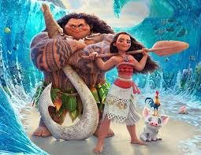
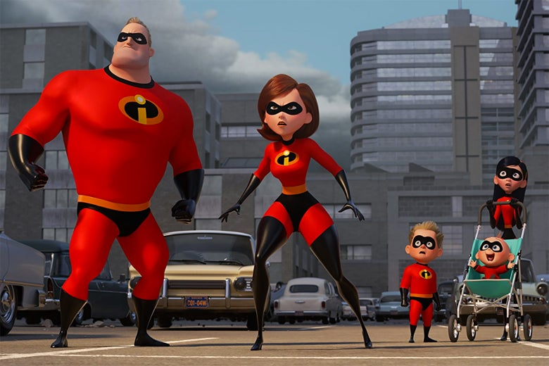
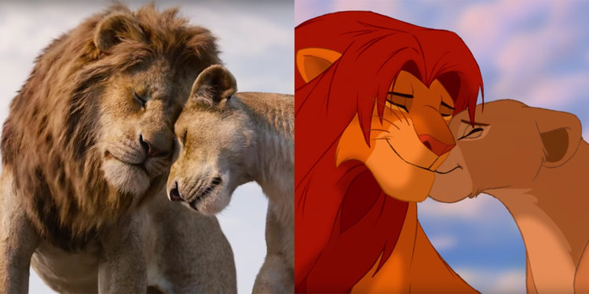
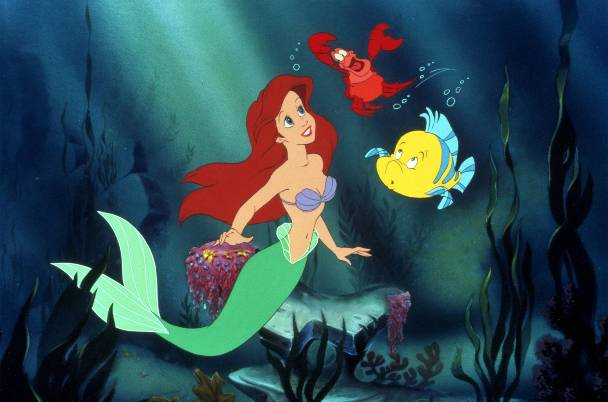
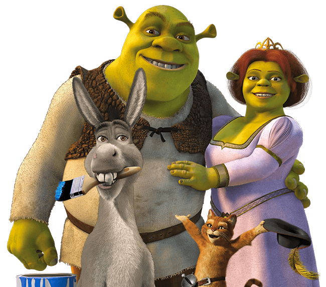
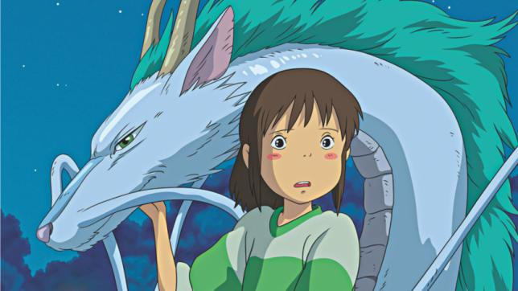

All-time Favorites
Jurassic Park
Release Date: June 11, 1993
Jurassic Park is a classic film where a team of brilliant scientists create an island for ferocious inhabitants-Dinosaurs. It ultimately became a huge mistake. Now, follow along as these scientists try to escape ... alive.
Memento
Release Date: March 16, 2001
Imagine reliving the same moment over and over again, and not knowing it has happened before. Leonard had a happy life: a home, a wife, and a working memory. Now, his wife was murdered, and the only way he knows is by looking at his tattoos. Tune in to see how leonard navigates his life with anterograde amnesia in order to find his wife's killer, only to stumble upon a shocking discovery.
Moana
Release Date: November 23, 2016 Sail across the ocean with Moana and her demigod partner, Maui, to restore the island of Motunui and to bring Te Fiti back to life. This culturally-immersive film introduces moviewatchers to Polynesian roots.
The Incredibles
Release Date: November 5, 2004 Being superheroes in a city where superheroes are outlawed is hard. Mr. Incredible and Elastigirl are forced to live their lives as normal people, Bob and Helen Parr. And they are not alone. They have to adjust to their new lives alongside their three kids: Jack Jack, Dash, and Violet. However, Bob longs to go back to his superhero life and accepts the quest of a dangerous enemy. He becomes a hostage, and the only way to save him is for his family to break the law.
The Lion King
Release Date: June 24, 1994 Simba was born with a great inheritance: being the next in line to become king of the Pride Lands. He was set to succeed his father, King Mufasa, which angered his uncle Scar. In Scar's mind, the throne was rightfully his. Scar incites tragedy in the kingdom, and Simba must figure out how to rebuild and become the great king his father once was.
The Little Mermaid
Release Date: November 13, 1989 Ever since Ariel's mother was killed unjustly by pirates, King Triton banned all of his daughters from ever contacting humans again. Longing freedom to be a part of the human world and having fallen in love with a prince, Ariel goes to villainess Ursula and makes a deal: her voice for human legs. But, Ursula had plans of her own: to rule Atlantica.
Selena
Release Date: March 21, 1997A Tragic film based on the life of rising Mexican-American singer Selena Quintanilla. From her beginnings as a rejected youth singer to a record-selling grammy-award winning artist, Selena is an exemplary inspiration and prime example of perseverance. Talent that is gone, but never forgotten.
Shrek
Release Date: April 22, 2001 This comedic animated film shows the friendship development between an unlikely duo: an ogre and a donkey. Together, they go on Lord Farquaad's quest to save princess Fiona from a dragon-guarded tower. But, for an ogre who seems reserved and angry all the time, he ends up falling in love.
Spiderman
Release Date: May 3, 2002
This action-packed film follows around Highschooler Peter Parker, who gains spider-like superpowers after being bit by a lab-experimented spider. He becomes a superhuman who with the guidance of his late Uncle Ben, utilizes his newfound abilities for the social good. Peter must learn how to balance his two identities amidst his growing love for Mary Jane.
Spirited Away
Release Date: August 31, 2002 This is one of the first films that piqued my interest in Anime. Chihiro is a young girl who is stuck in a supernatural world alongside her parents. To be set free, she must work and assist supernatural beings. There are alot of heartfelt lessons that emanate in this great film.